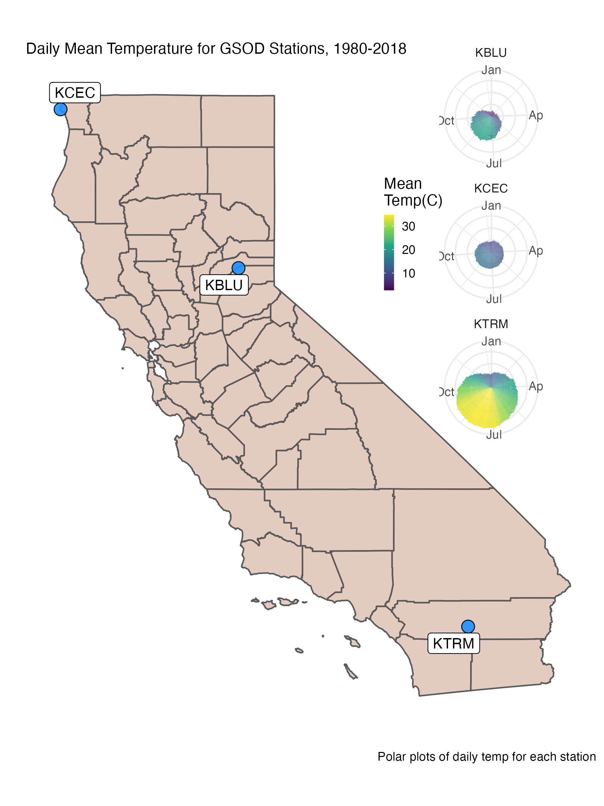

Spatial Joins in R with sf
Some of the most common and useful geospatial operations are joins based on some component of the spatial topology. For example, you want to figure out what attributes of certain points that are associated with or within certain polygons on the landscape…like bus-stops in a county or river gaging stations within a watershed.
Spatial joins are based on the intersection between two spatial objects, often points and the polygons. There are many ways we can join objects, which may include specific options like crosses,near, within, touches, etc. The point being, we can do all this in R! Robin Lovelace et al. have a great online book available: https://geocompr.robinlovelace.net/spatial-operations.html that covers some of this material. Check it out!
Let’s load the libraries we’re going to need first.
library(here)
library(sf)
library(dplyr)
library(viridis)
library(ggplot2)
library(USAboundaries)
library(rnaturalearth)
library(GSODR)
library(ggrepel)
library(cowplot)Polygon Data
We’ll be using California and CA counties pulled from the USAboundaries package.
# get USA states, filter out Puerto Rico, Alaska, and Hawaii for now
us <- us_states(resolution = "low") %>%
filter(!state_abbr %in% c("PR", "AK", "HI"))
# get CA boundary with high definition
ca <- USAboundaries::us_states(resolution = "high", states = "CA")
# make a box around CA (a grid with an n=1) for inset
ca_box <- st_make_grid(ca, n = 1)
# get CA county boundary
ca_co <- USAboundaries::us_counties(resolution = "high", states = "CA")
# make sure we have all the pieces with a quick test plot
plot(us$geometry)
plot(ca$geometry, add=T, col="gray50", border="maroon")
plot(ca_co$geometry, add=T, border="pink", col=NA)
plot(ca_box, add=T, border="red3", col=NA, lwd=2)Point Data
Now we have some polygon data to work with…let’s add some climate data and practice joining polygons to points and points to polygons! First let’s use the GSODR (Global Surface Summary of the Day) package to get global climate station locations. Then we can join to a few specific states/counties, and plot. First the GSOD data:
# load the station metadata file from GSODR (this loads `isd_history` in your
# R session)
load(system.file("extdata", "isd_history.rda", package = "GSODR"))
# make spatial
isd_history <- as.data.frame(isd_history) %>%
st_as_sf(coords=c("LON","LAT"), crs=4326, remove=FALSE)
# filter to US and CA, many sites out in buoys along coast
isd_history_ca <- dplyr::filter(isd_history, CTRY=="US", STATE=="CA")Note, this is a fairly large set of point data, with 28,104 observations globally. Let’s map this so we can see how dense this dataset actually is. Let’s use a nice set of global maps from the rnaturalearth package. Because the points are so dense, let’s plot those first, then we’ll add a layer of world country outlines.
# view!
library(rnaturalearth)
library(rnaturalearthdata)
world <- ne_countries(scale = "medium", returnclass = "sf")
plot(isd_history$geometry, pch=16, cex=0.2, col="gray50")## old-style crs object detected; please recreate object with a recent sf::st_crs()
## old-style crs object detected; please recreate object with a recent sf::st_crs()
## old-style crs object detected; please recreate object with a recent sf::st_crs()plot(world$geometry, add=T)
title("GSOD Climate Stations")That’s a lot of points! Let’s look at just California to make this a little more manageable.
# look at CA sites only
plot(isd_history_ca$geometry, cex=0.5)## old-style crs object detected; please recreate object with a recent sf::st_crs()
## old-style crs object detected; please recreate object with a recent sf::st_crs()
## old-style crs object detected; please recreate object with a recent sf::st_crs()plot(ca$geometry, col=alpha("gray", 0.5), border="#440154FF", lwd=1.5, add=TRUE)
plot(isd_history_ca$geometry, add=T, pch=21, bg="#21908CFF", cex=0.7, col="black")
title("GSOD Climate Stations labeled as CA")Great, now we have a dataframe in our environment that has both global climate station locations, and only stations associated with California, USA. You’ll notice there are a number of stations that fall outside of the CA border, largely those associated with buoys along the coast.
Spatial Joins
Select POLYGONS containing POINTS
This first approach only selects polygons that contain points. For demonstration sake, let’s use the larger global point dataset. Note this does not modify the polygon dataframe in any form (i.e., add attributes, update, summarize, etc). It is only selecting or filtering to the polygons that contain points using a spatial join.
# Get CA county POLYGONS only that contain ISD points within county boundaries
# does not bring attributes from points forward
ca_co_isd_poly <- ca_co[isd_history, ]## old-style crs object detected; please recreate object with a recent sf::st_crs()
## old-style crs object detected; please recreate object with a recent sf::st_crs()
## old-style crs object detected; please recreate object with a recent sf::st_crs()
## old-style crs object detected; please recreate object with a recent sf::st_crs()plot(ca_co_isd_poly$geometry, col=alpha("blue",0.3))Anti-Join Non-Matching Objects
So most counties have at least one point present. What if we specifically wanted to find the counties that don’t have a climate GSOD station in them? We can use something called an “anti_join”, which does precisely that, it identifies the items that don’t have a match. There’s a few possible ways to do this, but the most flexible I’ve found is using the following, because it’s easy to return whatever spatial object you prefer (e.g., points, polygons, lines).
The key is to use the same subsetting [ ] option, but add the !lengths() function to return a logical vector of all the non-matching objects. We are essentially filtering by this vector, so this doesn’t actually add any data from one layer to the other, it simply filters where there aren’t any overlapping bits.
# Find ISD points DON'T within county boundaries
ca_co_poly_anti <- isd_history_ca[!lengths(st_intersects(isd_history_ca, ca_co)), ]## old-style crs object detected; please recreate object with a recent sf::st_crs()
## old-style crs object detected; please recreate object with a recent sf::st_crs()
## old-style crs object detected; please recreate object with a recent sf::st_crs()
## old-style crs object detected; please recreate object with a recent sf::st_crs()
## old-style crs object detected; please recreate object with a recent sf::st_crs()
## old-style crs object detected; please recreate object with a recent sf::st_crs()
## old-style crs object detected; please recreate object with a recent sf::st_crs()
## old-style crs object detected; please recreate object with a recent sf::st_crs()# Find Counties that don't contain ISD points
ca_co_poly_anti2 <- ca_co[!lengths(st_intersects(ca_co, isd_history_ca)), ]## old-style crs object detected; please recreate object with a recent sf::st_crs()
## old-style crs object detected; please recreate object with a recent sf::st_crs()
## old-style crs object detected; please recreate object with a recent sf::st_crs()
## old-style crs object detected; please recreate object with a recent sf::st_crs()# Plot it!
plot(ca_co$geometry, col=alpha("pink",0.3))
plot(ca_co_poly_anti$geometry, pch=15, add=T, col="maroon")
plot(ca_co_poly_anti2$geometry, add=T, col="darkgreen")
title("Anti-joins with CA GSOD Climate Stations:
Points outside of county boundaries (squares),
Counties with no stations (green)")Join Attributes: POINTS inside POLYGONS
Great, what about joining the data attributes? Let’s look for points that fall within CA counties, and add ATTRIBUTES from the county polygons to the climate station points. Just a reminder, here’s the data columns (or attributes) in the polygon dataset:
## statefp countyfp countyns affgeoid geoid name namelsad stusps state_name lsad aland awater state_name state_abbr
## 81 06 025 00277277 0500000US06025 06025 Imperial Imperial County CA California 06 10814595262 790216761 California CA
## 82 06 087 00277308 0500000US06087 06087 Santa Cruz Santa Cruz County CA California 06 1152823584 419714230 California CA
## 83 06 097 01657246 0500000US06097 06097 Sonoma Sonoma County CA California 06 4080862341 498084088 California CA
## 84 06 045 00277287 0500000US06045 06045 Mendocino Mendocino County CA California 06 9082632466 961740401 California CA
## 85 06 023 01681908 0500000US06023 06023 Humboldt Humboldt County CA California 06 9241565229 1253726036 California CA
## 86 06 057 01682927 0500000US06057 06057 Nevada Nevada County CA California 06 2480587302 41531993 California CA
## jurisdiction_type geometry
## 81 state MULTIPOLYGON (((-116.1062 3...
## 82 state MULTIPOLYGON (((-122.3177 3...
## 83 state MULTIPOLYGON (((-123.5331 3...
## 84 state MULTIPOLYGON (((-124.0233 4...
## 85 state MULTIPOLYGON (((-124.4086 4...
## 86 state MULTIPOLYGON (((-121.2797 3...So in this case, let’s say we want to add the county name attribute to our POINT dataset, which looks like this (notice there’s no county field or name field):
## old-style crs object detected; please recreate object with a recent sf::st_crs()## USAF WBAN STN_NAME CTRY STATE CALL LAT LON ELEV_M BEGIN END STNID ELEV_M_SRTM_90m geometry
## 1 008268 99999 WXPOD8278 AF <NA> <NA> 32.950 65.567 1156.7 20100519 20120323 008268-99999 1160 POINT (65.567 32.95)
## 2 010010 99999 JAN MAYEN(NOR-NAVY) NO <NA> ENJA 70.933 -8.667 9.0 19310101 20190115 010010-99999 NA POINT (-8.667 70.933)
## 3 010014 99999 SORSTOKKEN NO <NA> ENSO 59.792 5.341 48.8 19861120 20190115 010014-99999 48 POINT (5.341 59.792)
## 4 010015 99999 BRINGELAND NO <NA> <NA> 61.383 5.867 327.0 19870117 20081231 010015-99999 NA POINT (5.867 61.383)
## 5 010016 99999 RORVIK/RYUM NO <NA> <NA> 64.850 11.233 14.0 19870116 19910806 010016-99999 NA POINT (11.233 64.85)
## 6 010017 99999 FRIGG NO <NA> ENFR 59.980 2.250 48.0 19880320 20050228 010017-99999 48 POINT (2.25 59.98)So to spatially join the county name attribute with the appropriate point locations, let’s use st_join. If we use left=TRUE here, our result will retain all the points in the dataset rather than just the the spatial overlaps (where points fall inside polygons). So left=TRUE is essentially a dplyr::left_join, and left=FALSE is equivalent to a dplyr::inner_join.
# For POINTS that fall within CA_counties, adds ATTRIBUTES, retains ALL pts if left=TRUE, otherwise uses inner_join
isd_ca_co_pts <- st_join(isd_history, left = FALSE, ca_co["name"]) # join points
# plot
plot(isd_ca_co_pts$geometry, pch=21, cex=0.7, col="purple", bg="gray80")
plot(ca_co$geometry, border="gray20", col=NA, add=T)## USAF WBAN STN_NAME CTRY STATE CALL LAT LON ELEV_M BEGIN END STNID ELEV_M_SRTM_90m name
## 13545 690020 93218 JOLON HUNTER LIGGETT MIL RES US CA KHGT 36.000 -121.233 317.0 19640715 19970401 690020-93218 325 Monterey
## 13546 690020 99999 JOLON HUNTER LIGGETT MIL RES US CA KHGT 36.000 -121.233 317.0 20030702 20030801 690020-99999 325 Monterey
## 13547 690070 93217 FRITZSCHE AAF US CA KOAR 36.683 -121.767 43.0 19600404 19930831 690070-93217 32 Monterey
## 13552 690140 93101 EL TORO MCAS US CA KNZJ 33.667 -117.733 116.7 19890101 19990630 690140-93101 95 Orange
## 13553 690150 93121 TWENTY NINE PALMS US CA KNXP 34.300 -116.167 625.1 19900102 20190116 690150-93121 617 San Bernardino
## 13554 690150 99999 TWENTYNINE PALMS US CA KNXP 34.300 -116.167 626.0 19891115 19891229 690150-99999 617 San Bernardino
## geometry
## 13545 POINT (-121.233 36)
## 13546 POINT (-121.233 36)
## 13547 POINT (-121.767 36.683)
## 13552 POINT (-117.733 33.667)
## 13553 POINT (-116.167 34.3)
## 13554 POINT (-116.167 34.3)Now we have only points that fall inside of a CA county, AND the new data frame now has a new column/attribute called “name” (all our climate station points have a named CA county associated with them). We could easily specify additional columns inside our st_join function, or if we don’t specify any columns, then all columns from the polygon dataframe that spatially joined/matched the points data would be added to the points dataframe.
isd_ca_co_pts <- st_join(isd_history, left = FALSE, ca_co) # join all columns
Practice with Climate Data Example!
Hopefully the above was useful…but let’s actually practice how we may use this by actually using some spatial joins to select and download some climate data from the GSODR package, and then make some visualizations. To start, let’s take a look at what stations have data between 1980 and 2018. Check the GSODR vignette for more details, I’m just applying some of the commands they lay describe.
Check Stations for Data Availability
Here we check what stations contain data between a given date range. Some of these stations go back to the 1930’s, but we’ll focus on 1980–2018.
# check availability for a date range
stations <- isd_ca_co_pts[isd_ca_co_pts$BEGIN <= 19800101 &
isd_ca_co_pts$END >= 20181231, ]
# Plot where these stations are?
ggplot() +
geom_sf(data=ca, fill="steelblue", alpha=0.4) +
geom_sf(data=ca_co, color="gray50", lwd=0.4, alpha=0.4) +
geom_sf(data = stations, size = 2, pch=21, color="thistle1", fill="black") +
theme_bw()+
ggtitle("GSOD Stations with data 1980-2018")Calculate Stations Per County
Looks like there are 53 stations, and some counties have more than one. Let’s apply our spatial join powers to filter this list down a bit. Let’s:
- Summarize our station data using the spatial_joined county
nameattribute so we can calculate how many stations we have per county. - Create a dataset that includes only stations from counties with a single station
- Create a dataset that contains stations that are within a set distance from the centroid of the county
We’ll mainly use some basic dplyr here, which is possible because as sf objects, these are still simple data frames.
#class(stations) # sf object
# calc number per county
stations_n <- stations %>%
rename(cnty_name=name) %>% # make column amore clear
group_by(cnty_name) %>%
mutate(n=n()) %>%
ungroup()
#class(stations_n) # still sf object
# join back to county layer with a spatial join, using left=FALSE (same as "inner_join")
ca_co_stations <- st_join(ca_co, stations_n, left = FALSE)
# plot!
ggplot() +
geom_sf(data=ca) +
geom_sf(data=ca_co_stations, aes(fill=as.factor(n)), lwd=0.4, alpha=0.4) +
theme_bw()+
scale_fill_viridis_d("No. of Stations")+
ggtitle("Number of GSOD Stations with data 1980-2018 per County")Pick Station Nearest the Centroid of County
Well great, what do we do for counties with multiple stations? How about picking the station nearest the centroid of the county. Steps:
- We need to work with just counties with more than one station.
- We need to add the centroid of each of the counties in question.
- We need to select the station nearest the centroid.
For Step 2, we’re going to use the purrr package to map or apply the st_centroid function over each county in our dataframe. This is the equivalent of a for-loop, it just looks very different.
# STEP 1: filter to stations with n>1
stations_n2 <- stations_n %>% filter(n > 1)
# STEP 2: Use "purrr" package with sf to get Centroid points for our counties with n>1
library(purrr)
ca_co_centroid_pts <- ca_co_stations %>%
filter(n > 1) %>%
# add centroid values using the geometry column
mutate(cent_lon=map_dbl(geometry, ~st_centroid(.x)[[1]]),
cent_lat=map_dbl(geometry, ~st_centroid(.x)[[2]])) %>%
as.data.frame() # convert to simple dataframe
# make back into an sf object, but only using the centroid X/Ys we just made
ca_co_centroid_pts <- st_as_sf(ca_co_centroid_pts, coords = c("cent_lon","cent_lat"), crs=4326, remove = FALSE)
# plot!
ggplot() +
geom_sf(data=ca_co) +
geom_sf(data=ca_co_centroid_pts, aes(fill=as.factor(n)), pch=21, size=4) +
theme_bw()+
scale_fill_viridis_d("No. of Stations") +
labs(subtitle = "Centroids for Counties with >1 GSOD Station")Step 3: This is the trickiest part…
There are probably a few different ways to do this, but let’s try to use the one that seems simplest and uses the fewest lines of code. A handy package (st_nn) will allows us to nearest neighbors between points/lines/polygons, and can provide distances as well. So let’s get the station nearest our county centroid for all the counties with stations > 1.
library(nngeo)
# find the first nearest neighbor GSOD station for each centroid, returns a list
nearest_stations <- st_nn(ca_co_centroid_pts, stations_n2, returnDist = T, k = 1, progress = FALSE)## lon-lat points# add distances and centroid ID and make into a dataframe, get only distinct IDs
nearest_stations_df <- tibble(dist=nearest_stations$dist, centrID=do.call(rbind, nearest_stations$nn)) %>%
dplyr::distinct(.keep_all = T)
# make a df of stations in counties where n=1
stations_n1 <- stations_n %>% filter(n==1)
# now select the "nearest to centroid" stations and bind to the n1 dataset
stations_final <- stations_n2[nearest_stations_df$centrID,] %>%
rbind(stations_n1)
# Plot it to be sure
ggplot() +
geom_sf(data=ca_co) +
geom_sf(data=ca_co_centroid_pts, pch=21, size=2) +
geom_sf(data=stations_n2, col="orange", alpha=0.9, pch=17, size=1.8) +
geom_sf(data=stations_final, col="blue3", alpha=0.9) +
theme_bw() + labs(x="Lon",y="Lat")+
geom_label_repel(data=stations_final, aes(x=st_coordinates(geometry)[,1],
y=st_coordinates(geometry)[,2], label=CALL), size=2.5) +
labs(caption = "County Centroids (open circle),
Final Stations Selected (blue circle),
Stations n>1 (orange)")That was a lot! But Looks like all works, and now we have a final set of stations we can use to download data. For simplicity in this example, I’m picking three stations, one with the lowest elevation, one with the highest elevation, and one with the greatest latitude.
Download Climate Data
Now we can use our station list to download daily data for each station for any period of record we want. Note, this code works but took 3-4 minutes to run. To speed things up I’ve saved the file here, or just grab the summarized data shown in the next section.
# Get highest and lowest elevation Station IDs and the northernmost (highest) latitude:
(stationIDs <- stations_final %>%
filter(min(ELEV_M)==ELEV_M | max(ELEV_M)==ELEV_M | CALL=="KCEC") %>%
select(STNID, CALL, -geometry) %>% as.data.frame() %>%
select(-geometry))
# get data:
climdata <- get_GSOD(station = stationIDs$STNID, years = c(1980:2018))
# save it!!
save(climdata, file = "data/CA_stations_GSOD_19800101-20181231.rda")Summarize and Visualize!
Finally, we have data, let’s summarize and visualize these data. I’ll aggregate these data to monthly means so we can see different timing patterns in precipitation and temperature across the state.
load(paste0(here::here(),"/data/CA_stations_GSOD_19800101-20181231.rda"))
climdata_stations <- dplyr::distinct(climdata, CALL, .keep_all = TRUE) %>%
st_as_sf(coords=c("LON","LAT"), crs=4326, remove = F)Monthly Average
Let’s calculate averages and then see how these look for these different stations.
# MONTH: filter missing data out:
clim_month <- climdata %>%
filter(!is.na(PRCP)) %>%
group_by(CALL, MONTH) %>%
summarize_at(.vars=c("TEMP","PRCP"), .funs = list(min=min, mean=mean, max=max)) %>%
ungroup() %>%
mutate(CALL=forcats::fct_relevel(CALL,c("KCEC","KBLU","KTRM"))) # relevel order
# monthly prcp
mPPT <- ggplot() + geom_col(data=clim_month, aes(x=MONTH, y=PRCP_mean, fill=PRCP_mean), show.legend = T)+
theme_minimal() + labs(y="", x="")+
theme(plot.background = element_blank(),
#legend.position = "left",
legend.position = c(-0.25, 0.55),
legend.key.height = unit(.15,units = "in"),
legend.key.width = unit(.1, units = "in"),
panel.border = element_blank(),
axis.text.y = element_blank(),
plot.margin = unit(c(0, 0, 0 ,0), "mm")) +
scale_fill_viridis_c("Mean \nPPT(in)") +
coord_polar() +
facet_wrap(clim_month$CALL~., nrow = 3)
# make a map
siteMap <- ggplot() +
geom_sf(data=ca_co, fill="sienna",alpha=0.3) +
geom_sf(data=climdata_stations, fill="dodgerblue", alpha=0.9, pch=21, size=4) +
geom_label_repel(data=climdata_stations, aes(x=LON, y=LAT, label=CALL), size=3.7) +
theme_bw() + theme(panel.border = element_blank()) +
coord_sf(datum = NA)+
labs(subtitle="Monthly Precipitation for GSOD Stations, 1980-2018", y="",x="",
caption="Polar plots of monthly precip for each station")
# Plot it together using cowplot
ggdraw(siteMap) +
draw_plot(mPPT, width = 0.6, height = .53, x = 0.48, y = 0.42)
ggsave("img/monthly_ppt_map.png", width = 6, height = 8, units = "in", dpi=300)
Daily
Let’s do the same thing for temperature!
# YDAY: filter
clim_day <- climdata %>%
filter(!is.na(PRCP)) %>%
group_by(CALL, YDAY) %>%
summarize_at(.vars=vars(TEMP,PRCP), .funs = list(min=min, mean=mean, max=max))
# daily mean temp
(dTEMP <- ggplot() + geom_col(data=clim_day, aes(x=YDAY, y=TEMP_mean, fill=TEMP_mean), show.legend = T)+
theme_minimal() + labs(y="", x="") +
scale_x_continuous(breaks=c(1, 90, 180, 270),
labels=c("Jan","Apr","Jul","Oct")) +
theme(plot.background = element_blank(),
legend.position = c(-0.25, 0.55),
legend.key.height = unit(.15,units = "in"),
legend.key.width = unit(.1, units = "in"),
panel.border = element_blank(),
axis.text.y = element_blank(),
plot.margin = unit(c(0, 0, 0 ,0), "mm")) +
scale_fill_viridis_c("Mean \nTemp(C)") +
coord_polar() +
facet_wrap(CALL~., nrow = 3))
siteMap2 <- ggplot() +
geom_sf(data=ca_co, fill="sienna",alpha=0.3) +
geom_sf(data=climdata_stations, fill="dodgerblue", alpha=0.9, pch=21, size=4) +
geom_label_repel(data=climdata_stations, aes(x=LON, y=LAT, label=CALL), size=3.7) +
theme_bw() + theme(panel.border = element_blank()) +
coord_sf(datum = NA)+
labs(subtitle="Daily Mean Temperature for GSOD Stations, 1980-2018", y="",x="",
caption="Polar plots of daily temp for each station")
# Plot it together using cowplot
ggdraw(siteMap2) +
draw_plot(dTEMP, width = 0.63, height = .53, x = 0.48, y = 0.42)
ggsave("img/daily_temp_map.png", width = 6, height = 8, units = "in", dpi=300)
Summary
California is an interesting place because we get most of our water during the winter, and typically have a long warm/dry period through the summer (a common Mediterranean climate pattern). It’s also striking to see the difference in mean precipitation (over a ~40 year period) across the state.
Hopefully there were some useful tidbits in this lesson/post. Please let me know if you have questions/comments (see the Contact tab).